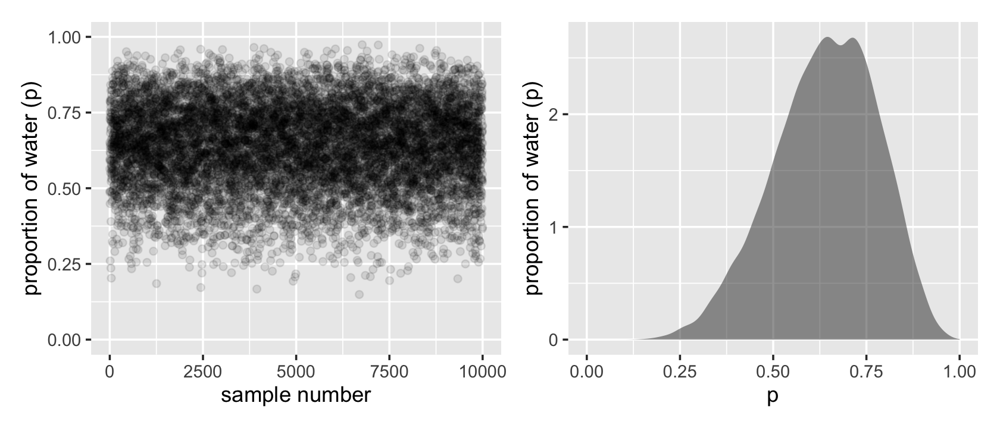
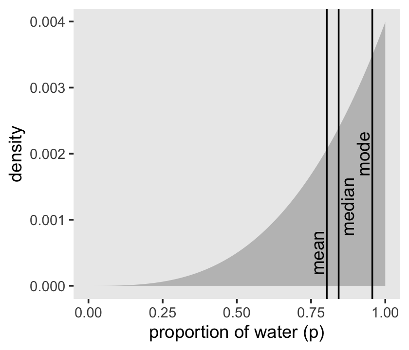

3 Sampling the Imaginary
3.1 Vampire diversion
If you would like to know the probability someone is a vampire given they test positive to the blood-based vampire test, you compute
\[\text{Pr(vampire|positive)} = \frac{\text{Pr(positive|vampire) Pr(vampire)}}{\text{Pr(positive)}}.\]
We’ll do so within a tibble.
library(tidyverse)
tibble(
`P(+ | vampire)` = .95,
`P(+ | mortal)` = .01,
`P(vampire)` = .001
) %>%
mutate(
`P(+, vampire)` = `P(vampire)` * `P(+ | vampire)`,
`P(+, mortal)` = (1 - `P(vampire)`) * `P(+ | mortal)`,
`P(+)` = `P(+, vampire)` + `P(+, mortal)`,
`P(vampire | +)` = `P(+, vampire)` / `P(+)`
) %>% pander::pander()| P(+ | vampire) | P(+ | mortal) | P(vampire) | P(+, vampire) | P(+, mortal) |
|---|---|---|---|---|
| 0.95 | 0.01 | 0.001 | 0.00095 | 0.00999 |
| P(+) | P(vampire | +) |
|---|---|
| 0.01094 | 0.08684 |
Here’s the other way of tackling the vampire problem, this time using the frequency format.
tibble(
vampires = 100,
pos_vampires = 0.95 * vampires,
mortals = 99900,
pos_mortals = 0.01 * mortals,
positives = pos_vampires + pos_mortals,
`P(vampire | +)` = pos_vampires / positives
) %>%
pander::pander()| vampires | pos_vampires | mortals | pos_mortals | positives | P(vampire | +) |
|---|---|---|---|---|---|
| 100 | 95 | 99900 | 999 | 1094 | 0.08684 |
The posterior distribution is a probability distribution. And like all probability distributions, we can imagine drawing samples from it. The sampled events in this case are parameter values. Most parameters have no exact empirical realization. The Bayesian formalism treats parameter distributions as relative plausibility, not as any physical random process. In any event, randomness is always a property of information, never of the real world. But inside the computer, parameters are just as empirical as the outcome of a coin flip or a die toss or an agricultural experiment. The posterior defines the expected frequency that different parameter values will appear, once we start plucking parameters out of it. (McElreath, 2020, p. 50, emphasis in the original)
3.2 Sampling from a grid-approximate posterior
Once again, here we use grid approximation to generate samples. This time, let’s make a little function to produce our grid data frame given:
- the data,
- a prior (specified as a vector of values, as a single value, or as a function), and
- a grid size (which is ignored if the prior is specified as a vector of values).
binomial_grid <-
function(n_success, n_trials, prior = dunif, grid_size = 1001, ...) {
if (is.numeric(prior) && length(prior) > 1) {
grid_size <- length(prior)
}
expand_grid(
p = seq(from = 0, to = 1, length.out = grid_size)
) %>%
mutate(
prior = if (is.numeric(prior)) prior else prior(p, ...),
likelihood = dbinom(n_success, size = n_trials, prob = p),
posterior = (likelihood * prior) / sum(likelihood * prior)
) %>%
mutate(
prior = prior / sum(prior),
likelihood = likelihood / sum(likelihood)
)
}
BinomialGrid6of9 <- binomial_grid(6, 9)
BinomialGrid6of9 %>% reactable::reactable()This function returns a data frame containing all the components in McElreath’s R code 3.2 block.
Do note we’ve renamed his prob_p and prob_data as prior and likelihood, respectively.
Also, we have rescaled the prior and likelihood so that the sum of all the area under these curves
values is 1. This makes it easier to create plots comparing them.
BinomialGrid6of9 %>%
gf_line(posterior ~ p, color = ~"posterior", size = 1.4) %>%
gf_line(prior ~ p, color = ~"prior", size = 1.1) %>%
gf_line(likelihood ~ p, color = ~"likelihood", size = 0.8) %>%
gf_theme(legend.position = "top") %>%
gf_labs(color = "")Now we’ll use the dplyr::slice_sample() function to sample rows from d, saving them as sample.
# how many samples would you like?
n_samples <- 1e4
# make it reproducible
set.seed(3)
Samples6of9 <-
BinomialGrid6of9 %>%
slice_sample(n = n_samples, weight_by = posterior, replace = TRUE)
glimpse(Samples6of9)## Rows: 10,000
## Columns: 4
## $ p <dbl> 0.564, 0.651, 0.487, 0.592, 0.596, 0.787, 0.727, 0.490, 0.751, 0.449, 0.619, 0…
## $ prior <dbl> 0.000999001, 0.000999001, 0.000999001, 0.000999001, 0.000999001, 0.000999001, …
## $ likelihood <dbl> 2.240853e-03, 2.717950e-03, 1.512882e-03, 2.455783e-03, 2.482567e-03, 1.928708…
## $ posterior <dbl> 2.240853e-03, 2.717950e-03, 1.512882e-03, 2.455783e-03, 2.482567e-03, 1.928708…Now we can plots in Figure 3.1. For the left panel, we’ll need to add a variable numbering the samples.
p1 <- Samples6of9 %>%
mutate(sample_number = 1:n()) %>%
gf_point(p ~ sample_number, alpha = 0.1,
ylab = "proportion of water (p)",
xlab = "sample number") %>%
gf_lims(y = c(0,1))
That was based on 1e4 samples. On page 53, McElreath said the density would converge on the idealized shape if we keep increasing the number of samples. Here’s what it looks like with 1e6.
set.seed(3)
BinomialGrid6of9 %>%
slice_sample(n = 1e6, weight_by = posterior, replace = TRUE) %>%
gf_density(~ p, ylab = "proportion of water (p)") %>%
gf_lims(x = c(0,1))Yep, that’s more ideal.
3.3 Sampling to summarize
“Once your model produces a posterior distribution, the model’s work is done. But your work has just begun. It is necessary to summarize and interpret the posterior distribution. Exactly how it is summarized depends upon your purpose” (p. 53).
3.3.1 Intervals of defined boundaries.
To get the proportion of water less than some value of p within the tidyverse, you might first filter() by that value and then take the sum() within summarise().
## # A tibble: 1 x 1
## sum
## <dbl>
## 1 0.171To learn more about dplyr::summarise() and related functions, check out Baert’s Data wrangling part 4: Summarizing and slicing your data and Section 5.6 of R4DS (Grolemund & Wickham, 2017).
If what you want is a frequency based on filtering Samples6of9, then you might use n() within summarise().
## # A tibble: 1 x 1
## sum
## <dbl>
## 1 0.162A more explicit approach for the same computation is to follow up count() with mutate().
## # A tibble: 2 x 3
## `p < 0.5` n probability
## * <lgl> <int> <dbl>
## 1 FALSE 8377 0.838
## 2 TRUE 1623 0.162An even trickier approach for the same is to insert the logical statement p < .5 within the mean() function.
## # A tibble: 1 x 1
## sum
## <dbl>
## 1 0.162Much like McElreath discussed in the Overthinking: Counting with sum box, this works “because R internally converts a logical expression, like samples < 0.5, to a vector of TRUE and FALSE results, one for each element of samples, saying whether or not each element matches the criterion” (p. 54). When we inserted that vector of TRUE and FALSE values within the mean() function, they were then internally converted to a vector of 1’s and 0’s, the mean of which was the probability. Tricky!
Here are some additional (and arguably more natural) ways to do this taking advantage of functions in the mosaic package.
## prop_TRUE
## 0.1623## response prop_FALSE prop_TRUE
## 1 p < 0.5 0.8377 0.1623## compare(p, 0.5)
## < = >
## 0.1623 0.0020 0.8357To determine the posterior probability between 0.5 and 0.75, you can use & within filter().
## # A tibble: 1 x 1
## sum
## <dbl>
## 1 0.602Just multiply that value by 100 to get a percent.
Samples6of9 %>%
filter(p > .5 & p < .75) %>%
summarise(sum = n() / nrow(Samples6of9),
percent = 100 * n() / nrow(Samples6of9))## # A tibble: 1 x 2
## sum percent
## <dbl> <dbl>
## 1 0.602 60.2And, of course, you can do that with our mean() trick, too.
## # A tibble: 1 x 1
## percent
## <dbl>
## 1 60.23.3.2 Intervals of defined mass.
It is more common to see scientific journals reporting an interval of defined mass, usually known as a confidence interval. An interval of posterior probability, such as the ones we are working with, may instead be called a credible interval. We’re going to call it a compatibility interval instead, in order to avoid the unwarranted implications of “confidence” and “credibility.” What the interval indicates is a range of parameter values compatible with the model and data. The model and data themselves may not inspire confidence, in which case the interval will not either. (p. 54, emphasis in the original)
As a part of this block quote, McElreath linked to endnote 54, which reads: “I learned this term from Sander Greenland and his collaborators. See Amrhein et al. (2019) and Gelman and Greenland (2019)” (p. 560).
We’ll create the upper two panels for Figure 3.2 with geom_line(), geom_ribbon(), some careful filtering, and a little patchwork syntax.
# upper left panel
p1 <-
BinomialGrid6of9 %>%
gf_line(posterior ~ p) %>%
gf_area(data = BinomialGrid6of9 %>% filter(p < 0.5)) %>%
gf_labs(x = "proportion of water (p)", y = "density")
# upper right panel
p2 <-
BinomialGrid6of9 %>%
gf_line(posterior ~ p) %>%
# note this next line is the only difference in code from the last plot
gf_area(data = BinomialGrid6of9 %>% filter(p > 0.5, p < 0.75)) %>%
gf_labs(x = "proportion of water (p)", y = "density")
library(patchwork)
p1 + p2
We’ll come back for the lower two panels in a bit.
Since we saved our p samples within the well-named Samples6of9 tibble, we’ll have to index with $ within quantile.
## 80%
## 0.763## 80%
## 0.763That value will come in handy for the lower left panel of Figure 3.2. For an alternative approach, we could
extract p from Samples6of9 using pull(), and then pump it into quantile().
## 80%
## 0.763We might also use quantile() within summarise().
## # A tibble: 1 x 1
## `80th percentile`
## <dbl>
## 1 0.763Here’s the summarise() approach with two probabilities.
Samples6of9 %>%
summarise(`10th percentile` = quantile(p, p = .1),
`90th percentile` = quantile(p, p = .9))## # A tibble: 1 x 2
## `10th percentile` `90th percentile`
## <dbl> <dbl>
## 1 0.452 0.814The tidyverse approach is nice in that that family of functions typically returns a data frame. But sometimes you just want your values in a numeric vector for the sake of quick indexing. In that case, base R quantile() shines.
## 10% 90%
## 0.4520 0.8141Now we have our cutoff values saved as q_80 and q_10_and_90, we’re ready to make the bottom panels of Figure 3.2.
# lower left panel
p1 <-
BinomialGrid6of9 %>%
ggplot(aes(x = p, y = posterior)) +
geom_line() +
geom_area(data = BinomialGrid6of9 %>% filter(p < q_80)) +
annotate(geom = "text",
x = .25, y = .0025,
label = "lower 80%") +
labs(x = "proportion of water (p)",
y = "density")
# lower right panel
p2 <-
BinomialGrid6of9 %>%
ggplot(aes(x = p, y = posterior)) +
geom_line() +
geom_area(data = BinomialGrid6of9 %>% filter(p > q_10_and_90[1], p < q_10_and_90[2])) +
annotate(geom = "text",
x = .25, y = .0025,
label = "middle 80%") +
labs(x = "proportion of water (p)",
y = "density")
p1 + p2Now we follow along with McElreath’s R code 3.11 to compute a highly skewed posterior. We’ve already defined p and prior within d, above. Here we’ll reuse them and update the rest of the columns.
BinomialGrid3of3 <- binomial_grid(3, 3)
# make the next part reproducible
set.seed(3)
# here's our new samples tibble
(
Samples3of3 <-
BinomialGrid3of3 %>%
slice_sample(n = n_samples, weight_by = posterior, replace = TRUE)
)## # A tibble: 10,000 x 4
## p prior likelihood posterior
## <dbl> <dbl> <dbl> <dbl>
## 1 0.716 0.000999 0.00147 0.00147
## 2 0.651 0.000999 0.00110 0.00110
## 3 0.547 0.000999 0.000653 0.000653
## 4 0.999 0.000999 0.00398 0.00398
## 5 0.99 0.000999 0.00387 0.00387
## 6 0.787 0.000999 0.00195 0.00195
## 7 0.94 0.000999 0.00332 0.00332
## 8 0.817 0.000999 0.00218 0.00218
## 9 0.955 0.000999 0.00348 0.00348
## 10 0.449 0.000999 0.000361 0.000361
## # … with 9,990 more rowsThe rethinking::PI() function works like a nice shorthand for quantile(). So does mosaic::cdata().
## 25% 75%
## 0.709 0.935## 25% 75%
## 0.709 0.935## lower upper central.p
## 25% 0.709 0.935 0.5Now’s a good time to introduce Matthew Kay’s (2020a) tidybayes package, which offers an array of convenience functions for summarizing Bayesian models of the type we’ll be working with in this project. For all the brms-related details, see Kay’s (2020b) vignette, Extracting and visualizing tidy draws from brms models. Here we start simple.
## y ymin ymax .width .point .interval
## 1 0.843 0.709 0.935 0.5 median qiThe tidybayes package contains a family of functions that make it easy to summarize a distribution with a measure of central tendency accompanied by intervals. With median_qi(), we asked for the median and quantile-based intervals–just like we’ve been doing with quantile(). Note how the .width argument within median_qi() worked the same way the prob argument did within rethinking::PI(). With .width = .5, we indicated we wanted a quantile-based 50% interval, which was returned in the ymin and ymax columns. The tidybayes framework makes it easy to request multiple types of intervals. E.g., here we’ll request 50%, 80%, and 99% intervals.
## y ymin ymax .width .point .interval
## 1 0.843 0.709000 0.935 0.50 median qi
## 2 0.843 0.570000 0.975 0.80 median qi
## 3 0.843 0.260985 0.999 0.99 median qiThe .width column in the output indexed which line presented which interval. The value in the y column remained constant across rows. That’s because that column listed the measure of central tendency, the median in this case.
Now let’s use the rethinking::HPDI() function to return 50% highest posterior density intervals (HPDIs).
## |0.5 0.5|
## 0.842 0.999The reason I introduce tidybayes now is that the functions of the brms package only support percentile-based intervals of the type we computed with quantile() and median_qi(). But tidybayes also supports HPDIs.
## y ymin ymax .width .point .interval
## 1 0.9562951 0.842 0.999 0.5 mode hdiThis time we used the mode as the measure of central tendency. With this family of tidybayes functions, you specify the measure of central tendency in the prefix (i.e., mean, median, or mode) and then the type of interval you’d like (i.e., qi or hdi).
If all you want are the intervals without the measure of central tendency or all that other technical information, tidybayes also offers the handy qi() and hdi() functions.
## [,1] [,2]
## [1,] 0.709 0.935## [,1] [,2]
## [1,] 0.842 0.999These are nice in that they return simple numeric vectors, making them particularly useful to use as references within plots. Now we have that skill, we can use it to make Figure 3.3.
# lower left panel
p1 <-
BinomialGrid3of3 %>%
ggplot(aes(x = p)) +
# check out our sweet `qi()` indexing
geom_ribbon(data = BinomialGrid3of3 %>% filter(p > qi(Samples3of3$p, .width = .5)[1] &
p < qi(Samples3of3$p, .width = .5)[2]),
aes(ymin = 0, ymax = posterior),
fill = "grey75") +
geom_line(aes(y = posterior)) +
labs(subtitle = "50% Percentile Interval",
x = "proportion of water (p)",
y = "density")
# lower right panel
p2 <-
BinomialGrid3of3 %>%
ggplot(aes(x = p)) +
geom_ribbon(data = . %>% filter(p > hdi(Samples3of3$p, .width = .5)[1] &
p < hdi(Samples3of3$p, .width = .5)[2]),
aes(ymin = 0, ymax = posterior),
fill = "grey75") +
geom_line(aes(y = posterior)) +
labs(subtitle = "50% HPDI",
x = "proportion of water (p)",
y = "density")
# combine!
p1 | p2In the geom_ribbon() line for the HPDI plot, did you notice how we replaced d with .? When using the pipe (i.e., %>%), you can use the . as a placeholder for the original data object. It’s an odd and handy trick to know about. Go here to learn more.
So the HPDI has some advantages over the PI. But in most cases, these two types of interval are very similar. They only look so different in this case because the posterior distribution is highly skewed. If we instead used samples from the posterior distribution for six waters in nine tosses, these intervals would be nearly identical. Try it for yourself, using different probability masses, such as
prob=0.8andprob=0.95. When the posterior is bell shaped, it hardly matters which type of interval you use. (p. 57)
Let’s try it out.
Here are the intervals by .width and type of .interval.
bind_rows(mean_hdi(Samples6of9$p, .width = c(.8, .95)),
mean_qi(Samples6of9$p, .width = c(.8, .95))) %>%
select(.width, .interval, ymin:ymax) %>%
arrange(.width) %>%
mutate_if(is.double, round, digits = 2)## .width .interval ymin ymax
## 1 0.80 hdi 0.48 0.84
## 2 0.80 qi 0.45 0.81
## 3 0.95 hdi 0.37 0.90
## 4 0.95 qi 0.35 0.88We didn’t need that last mutate_if() line. It just made it easier to compare the ymin and ymax values. Anyway, McElreath was right. This time the differences between the HPDIs and QIs were trivial. Here’s a look at the posterior.
BinomialGrid6of9 %>%
ggplot(aes(x = p)) +
geom_line(aes(y = posterior)) +
labs(subtitle = "Six waters in nine tosses made\nfor a more symmetrical posterior",
x = "proportion of water (p)",
y = "density")Be warned:
The HPDI also has some disadvantages. HPDI is more computationally intensive than PI and suffers from greater simulation variance, which is a fancy way of saying that it is sensitive to how many samples you draw from the posterior. It is also harder to understand and many scientific audiences will not appreciate its features, while they will immediately understand a percentile interval, as ordinary non-Bayesian intervals are typically interpreted (incorrectly) as percentile intervals (pp. 57–58, emphasis in the original)
For convenience, we’ll primarily stick to the PI-based intervals in this ebook.
3.3.2.1 Rethinking: What do compatibility intervals mean?
At the start of this section, McElreath poked a little at frequentist confidence intervals. For an introduction to confidence intervals from the perspective of a frequentist, you might check out Cumming’s (2014) The new statistics: Why and how and the works referenced therein. Though their definition isn’t the most intuitive, I usually use confidence intervals when I wear my frequentist hat.
3.3.3 Point estimates.
We’ve been calling point estimates measures of central tendency. If we arrange() our d tibble in descending order by posterior, we’ll see the corresponding p value for its MAP estimate.
## # A tibble: 1,001 x 4
## p prior likelihood posterior
## <dbl> <dbl> <dbl> <dbl>
## 1 1 0.000999 0.00399 0.00399
## 2 0.999 0.000999 0.00398 0.00398
## 3 0.998 0.000999 0.00397 0.00397
## 4 0.997 0.000999 0.00396 0.00396
## 5 0.996 0.000999 0.00394 0.00394
## 6 0.995 0.000999 0.00393 0.00393
## 7 0.994 0.000999 0.00392 0.00392
## 8 0.993 0.000999 0.00391 0.00391
## 9 0.992 0.000999 0.00390 0.00390
## 10 0.991 0.000999 0.00389 0.00389
## # … with 991 more rowsTo emphasize it, we can use slice() to select the top row.
## # A tibble: 1 x 4
## p prior likelihood posterior
## <dbl> <dbl> <dbl> <dbl>
## 1 1 0.000999 0.00399 0.00399We can get the mode with mode_hdi() or mode_qi().
## # A tibble: 1 x 6
## p .lower .upper .width .point .interval
## <dbl> <dbl> <dbl> <dbl> <chr> <chr>
## 1 0.956 0.477 1 0.95 mode hdi## # A tibble: 1 x 6
## p .lower .upper .width .point .interval
## <dbl> <dbl> <dbl> <dbl> <chr> <chr>
## 1 0.956 0.401 0.994 0.95 mode qiThose returned a lot of output in addition to the mode. If all you want is the mode itself, you can just use tidybayes::Mode().
## [1] 0.9562951Medians and means are typical measures of central tendency, too.
## # A tibble: 1 x 2
## mean median
## <dbl> <dbl>
## 1 0.803 0.843We can inspect the three types of point estimate in the left panel of Figure 3.4. First we’ll bundle the three point estimates together in a tibble.
(
point_estimates <-
bind_rows(Samples3of3 %>% mean_qi(p),
Samples3of3 %>% median_qi(p),
Samples3of3 %>% mode_qi(p)) %>%
select(p, .point) %>%
# these last two columns will help us annotate
mutate(x = p + c(-.03, .03, -.03),
y = c(.0005, .0012, .002))
)## # A tibble: 3 x 4
## p .point x y
## <dbl> <chr> <dbl> <dbl>
## 1 0.803 mean 0.773 0.0005
## 2 0.843 median 0.873 0.00120
## 3 0.956 mode 0.926 0.002Now plot.
BinomialGrid3of3 %>%
ggplot(aes(x = p)) +
geom_ribbon(aes(ymin = 0, ymax = posterior),
fill = "grey75") +
geom_vline(xintercept = point_estimates$p) +
geom_text(data = point_estimates,
aes(x = x, y = y, label = .point),
angle = 90) +
labs(x = "proportion of water (p)",
y = "density") +
theme(panel.grid = element_blank())
As it turns out “different loss functions imply different point estimates” (p. 59, emphasis in the original).
Let \(p\) be the proportion of the Earth covered by water and \(d\) be our guess. If McElreath pays us $100 if we guess exactly right but subtracts money from the prize proportional to how far off we are, then our loss is proportional to \(d - p\). If we decide \(d = .5\), we can compute our expected loss.
## # A tibble: 1 x 1
## `expected loss`
## <dbl>
## 1 0.313What McElreath did with sapply(), we’ll do with purrr::map(). If you haven’t used it, map() is part of a family of similarly-named functions (e.g., map2()) from the purrr package (Henry & Wickham, 2020), which is itself part of the tidyverse. The map() family is the tidyverse alternative to the family of apply() functions from the base R framework. You can learn more about how to use the map() family here or here or here.
make_loss <- function(our_d) {
BinomialGrid3of3 %>%
mutate(loss = posterior * abs(our_d - p)) %>%
summarise(weighted_average_loss = sum(loss))
}
(
l <-
BinomialGrid3of3 %>%
select(p) %>%
rename(decision = p) %>%
mutate(weighted_average_loss = purrr::map(decision, make_loss)) %>%
unnest(weighted_average_loss)
)## # A tibble: 1,001 x 2
## decision weighted_average_loss
## <dbl> <dbl>
## 1 0 0.800
## 2 0.001 0.799
## 3 0.002 0.798
## 4 0.003 0.797
## 5 0.004 0.796
## 6 0.005 0.795
## 7 0.006 0.794
## 8 0.007 0.793
## 9 0.008 0.792
## 10 0.009 0.791
## # … with 991 more rowsNow we’re ready for the right panel of Figure 3.4.
# this will help us find the x and y coordinates for the minimum value
min_loss <-
l %>%
filter(weighted_average_loss == min(weighted_average_loss)) %>%
as.numeric()
# the plot
l %>%
ggplot(aes(x = decision)) +
geom_ribbon(aes(ymin = 0, ymax = weighted_average_loss),
fill = "grey75") +
geom_vline(xintercept = min_loss[1], color = "white", linetype = 3) +
geom_hline(yintercept = min_loss[2], color = "white", linetype = 3) +
ylab("expected proportional loss") +
theme(panel.grid = element_blank())
We saved the exact minimum value as min_loss[1], which is 0.841. Within sampling error, this is the posterior median as depicted by our samples.
## # A tibble: 1 x 1
## posterior_median
## <dbl>
## 1 0.843The quadratic loss \((d - p)^2\) suggests we should use the mean instead. Let’s investigate.
# amend our loss function
make_loss <- function(our_d) {
BinomialGrid3of3 %>%
mutate(loss = posterior * (our_d - p)^2) %>%
summarise(weighted_average_loss = sum(loss))
}
# remake our `l` data
l <-
BinomialGrid3of3 %>%
select(p) %>%
rename(decision = p) %>%
mutate(weighted_average_loss = purrr::map(decision, make_loss)) %>%
unnest(weighted_average_loss)
# update to the new minimum loss coordinates
min_loss <-
l %>%
filter(weighted_average_loss == min(weighted_average_loss)) %>%
as.numeric()
# update the plot
l %>%
ggplot(aes(x = decision)) +
geom_ribbon(aes(ymin = 0, ymax = weighted_average_loss),
fill = "grey75") +
geom_vline(xintercept = min_loss[1], color = "white", linetype = 3) +
geom_hline(yintercept = min_loss[2], color = "white", linetype = 3) +
ylab("expected proportional loss") +
theme(panel.grid = element_blank())
Based on quadratic loss \((d - p)^2\), the exact minimum value is 0.8. Within sampling error, this is the posterior mean of our samples.
## # A tibble: 1 x 1
## posterior_meaan
## <dbl>
## 1 0.803Usually, research scientists don’t think about loss functions. And so any point estimate like the mean or MAP that they may report isn’t intended to support any particular decision, but rather to describe the shape of the posterior. You might argue that the decision to make is whether or not to accept an hypothesis. But the challenge then is to say what the relevant costs and benefits would be, in terms of the knowledge gained or lost. Usually it’s better to communicate as much as you can about the posterior distribution, as well as the data and the model itself, so that others can build upon your work. Premature decisions to accept or reject hypotheses can cost lives. (p. 61)
In the endnote (62) linked to the end of that quote in the text, McElreath wrote: “See Hauer (2004) for three tales from transportation safety in which testing resulted in premature incorrect decisions and a demonstrable and continuing loss of human life” (p. 561).
3.4 Sampling to simulate prediction
McElreath’s five good reasons for simulation were
- model design
- model checking,
- software validation,
- research design, and
- forecasting.
3.4.1 Dummy data.
Dummy data for the globe tossing model arise from the binomial likelihood. If you let \(w\) be a count of water and \(n\) be the number of tosses, the binomial likelihood is
\[\operatorname{Pr} (w|n, p) = \frac{n!}{w!(n - w)!} p^w (1 - p)^{n - w}.\]
Letting \(n = 2\), \(p(w) = .7\), and \(w_\text{observed} = 0 \text{ through }2\), the densities are:
## # A tibble: 3 x 4
## n `p(w)` w density
## <dbl> <dbl> <int> <dbl>
## 1 2 0.7 0 0.09
## 2 2 0.7 1 0.42
## 3 2 0.7 2 0.490If we’re going to simulate, we should probably set our seed. Doing so makes the results reproducible.
## [1] 2Here are ten reproducible draws.
## [1] 2 1 2 2 1 1 2 2 1 1Now generate 100,000 (i.e., 1e5) reproducible dummy observations.
# how many would you like?
n_draws <- 1e5
set.seed(3)
d <- tibble(draws = rbinom(n_draws, size = 2, prob = .7))
d %>%
count(draws) %>%
mutate(proportion = n / nrow(d))## # A tibble: 3 x 3
## draws n proportion
## * <int> <int> <dbl>
## 1 0 9000 0.09
## 2 1 42051 0.421
## 3 2 48949 0.489As McElreath mused in the text (p. 63), those simulated proportion values are very close to the analytically calculated values in our density column a few code blocks up.
Here’s the simulation updated so \(n = 9\), which we plot in our version of Figure 3.5.
set.seed(3)
d <- tibble(draws = rbinom(n_draws, size = 9, prob = .7))
# the histogram
d %>%
ggplot(aes(x = draws)) +
geom_histogram(binwidth = 1, center = 0,
color = "grey92", size = 1/10) +
scale_x_continuous("dummy water count",
breaks = seq(from = 0, to = 9, by = 2)) +
ylab("frequency") +
coord_cartesian(xlim = c(0, 9)) +
theme(panel.grid = element_blank())
McElreath suggested we play around with different values of size and prob. With the next block of code, we’ll simulate nine conditions.
n_draws <- 1e5
simulate_binom <- function(n, probability) {
set.seed(3)
rbinom(n_draws, size = n, prob = probability)
}
d <-
crossing(n = c(3, 6, 9),
probability = c(.3, .6, .9)) %>%
mutate(draws = map2(n, probability, simulate_binom)) %>%
ungroup() %>%
mutate(n = str_c("n = ", n),
probability = str_c("p = ", probability)) %>%
unnest(draws)
head(d)## # A tibble: 6 x 3
## n probability draws
## <chr> <chr> <int>
## 1 n = 3 p = 0.3 0
## 2 n = 3 p = 0.3 2
## 3 n = 3 p = 0.3 1
## 4 n = 3 p = 0.3 0
## 5 n = 3 p = 0.3 1
## 6 n = 3 p = 0.3 1Let’s plot the simulation results.
d %>%
ggplot(aes(x = draws)) +
geom_histogram(binwidth = 1, center = 0,
color = "grey92", size = 1/10) +
scale_x_continuous("dummy water count",
breaks = seq(from = 0, to = 9, by = 2)) +
ylab("frequency") +
coord_cartesian(xlim = c(0, 9)) +
theme(panel.grid = element_blank()) +
facet_grid(n ~ probability)
3.4.2 Model checking.
If you’re new to applied statistics, you might be surprised how often mistakes arise.
3.4.2.1 Did the software work?
Let this haunt your dreams: “There is no way to really be sure that software works correctly” (p. 64).
If you’d like to dive deeper into these dark waters, check out one my favorite talks from StanCon 2018, Esther Williams in the Harold Holt Memorial Swimming Pool, by the ineffable Dan Simpson. If Simpson doesn’t end up drowning you, see Gabry and Simpson’s talk at the Royal Statistical Society 2018, Visualization in Bayesian workflow, a follow-up blog called Maybe it’s time to let the old ways die; or We broke R-hat so now we have to fix it, and that blog’s associated pre-print by Vehtari et al. (2019), Rank-normalization, folding, and localization: An improved \(\widehat R\) for assessing convergence of MCMC.
3.4.2.2 Is the model adequate?
The implied predictions of the model are uncertain in two ways, and it’s important to be aware of both.
First, there is observation uncertainty. For any unique value of the parameter \(p\), there is a unique implied pattern of observations that the model expects. These patterns of observations are the same gardens of forking data that you explored in the previous chapter. These patterns are also what you sampled in the previous section. There is uncertainty in the predicted observations, because even if you know \(p\) with certainty, you won’t know the next globe toss with certainty (unless \(p = 0\) or \(p = 1\)).
Second, there is uncertainty about \(p\). The posterior distribution over \(p\) embodies this uncertainty. And since there is uncertainty about \(p\), there is uncertainty about everything that depends upon \(p\). The uncertainty in \(p\) will interact with the sampling variation, when we try to assess what the model tells us about outcomes.
We’d like to propagate the parameter uncertainty–carry it forward–as we evaluate the implied predictions. All that is required is averaging over the posterior density for \(p\), while computing the predictions. For each possible value of the parameter \(p\), there is an implied distribution of outcomes. So if you were to compute the sampling distribution of outcomes at each value of \(p\), then you could average all of these prediction distributions together, using the posterior probabilities of each value of \(p\), to get a posterior predictive distribution. (pp. 64–65, emphasis in the original)
All this is depicted in Figure 3.6. To get ready to make our version, let’s first refresh our original grid approximation d.
# how many grid points would you like?
n <- 1001
n_success <- 6
n_trials <- 9
(
d <-
tibble(p = seq(from = 0, to = 1, length.out = n),
# note we're still using a flat uniform prior
prior = 1) %>%
mutate(likelihood = dbinom(n_success, size = n_trials, prob = p)) %>%
mutate(posterior = (likelihood * prior) / sum(likelihood * prior))
)## # A tibble: 1,001 x 4
## p prior likelihood posterior
## <dbl> <dbl> <dbl> <dbl>
## 1 0 1 0. 0.
## 2 0.001 1 8.37e-17 8.37e-19
## 3 0.002 1 5.34e-15 5.34e-17
## 4 0.003 1 6.07e-14 6.07e-16
## 5 0.004 1 3.40e-13 3.40e-15
## 6 0.005 1 1.29e-12 1.29e-14
## 7 0.006 1 3.85e-12 3.85e-14
## 8 0.007 1 9.68e-12 9.68e-14
## 9 0.008 1 2.15e-11 2.15e-13
## 10 0.009 1 4.34e-11 4.34e-13
## # … with 991 more rowsWe can make our version of the top of Figure 3.6 with a little tricky filtering.
d %>%
ggplot(aes(x = p)) +
geom_ribbon(aes(ymin = 0, ymax = posterior),
color = "grey67", fill = "grey67") +
geom_segment(data = . %>%
filter(p %in% c(seq(from = .1, to = .9, by = .1), 3 / 10)),
aes(xend = p,
y = 0, yend = posterior, size = posterior),
color = "grey33", show.legend = F) +
geom_point(data = . %>%
filter(p %in% c(seq(from = .1, to = .9, by = .1), 3 / 10)),
aes(y = posterior)) +
annotate(geom = "text", x = .08, y = .0025,
label = "Posterior probability") +
scale_size_continuous(range = c(0, 1)) +
scale_x_continuous("probability of water", breaks = c(0:10) / 10) +
scale_y_continuous(NULL, breaks = NULL) +
theme(panel.grid = element_blank())Note how we weighted the widths of the vertical lines by the posterior density.
We’ll need to do a bit of wrangling before we’re ready to make the plot in the middle panel of Figure 3.6.
n_draws <- 1e5
simulate_binom <- function(probability) {
set.seed(3)
rbinom(n_draws, size = 9, prob = probability)
}
d_small <-
tibble(probability = seq(from = .1, to = .9, by = .1)) %>%
mutate(draws = purrr::map(probability, simulate_binom)) %>%
unnest(draws) %>%
mutate(label = str_c("p = ", probability))
head(d_small)## # A tibble: 6 x 3
## probability draws label
## <dbl> <int> <chr>
## 1 0.1 0 p = 0.1
## 2 0.1 2 p = 0.1
## 3 0.1 0 p = 0.1
## 4 0.1 0 p = 0.1
## 5 0.1 1 p = 0.1
## 6 0.1 1 p = 0.1Now we’re ready to plot.
d_small %>%
ggplot(aes(x = draws)) +
geom_histogram(binwidth = 1, center = 0,
color = "grey92", size = 1/10) +
scale_x_continuous(NULL, breaks = seq(from = 0, to = 9, by = 3)) +
scale_y_continuous(NULL, breaks = NULL) +
labs(subtitle = "Sampling distributions") +
coord_cartesian(xlim = c(0, 9)) +
theme(panel.grid = element_blank()) +
facet_wrap(~ label, ncol = 9) 
To make the plot at the bottom of Figure 3.6, we’ll redefine our samples, this time including the w variable (see the R code 3.26 block in the text).
# how many samples would you like?
n_samples <- 1e4
# make it reproducible
set.seed(3)
samples <-
d %>%
slice_sample(n = n_samples, weight_by = posterior, replace = T) %>%
mutate(w = purrr::map_dbl(p, rbinom, n = 1, size = 9))
glimpse(samples)## Rows: 10,000
## Columns: 5
## $ p <dbl> 0.564, 0.651, 0.487, 0.592, 0.596, 0.787, 0.727, 0.490, 0.751, 0.449, 0.619, 0…
## $ prior <dbl> 1, 1, 1, 1, 1, 1, 1, 1, 1, 1, 1, 1, 1, 1, 1, 1, 1, 1, 1, 1, 1, 1, 1, 1, 1, 1, …
## $ likelihood <dbl> 0.224085305, 0.271795022, 0.151288232, 0.245578315, 0.248256678, 0.192870804, …
## $ posterior <dbl> 2.240853e-03, 2.717950e-03, 1.512882e-03, 2.455783e-03, 2.482567e-03, 1.928708…
## $ w <dbl> 4, 7, 3, 3, 7, 6, 8, 2, 6, 4, 5, 5, 8, 6, 4, 6, 8, 2, 6, 9, 9, 7, 4, 8, 9, 8, …Here’s our histogram.
samples %>%
ggplot(aes(x = w)) +
geom_histogram(binwidth = 1, center = 0,
color = "grey92", size = 1/10) +
scale_x_continuous("number of water samples",
breaks = seq(from = 0, to = 9, by = 3)) +
scale_y_continuous(NULL, breaks = NULL) +
ggtitle("Posterior predictive distribution") +
coord_cartesian(xlim = c(0, 9),
ylim = c(0, 3000)) +
theme(panel.grid = element_blank())In Figure 3.7, McElreath considered the longest sequence of the sample values. We’ve been using rbinom() with the size parameter set to 9 for our simulations. E.g.,
## [1] 7 5 6 8 7 5 6 3 3 4Notice this collapsed (i.e., aggregated) over the sequences within the individual sets of 9. What we need is to simulate nine individual trials many times over. For example, this
## [1] 0 1 1 1 0 0 0 0 0would be the disaggregated version of just one of the numerals returned by rbinom() when size = 9. So let’s try simulating again with un-aggregated samples. We’ll keep adding to our samples tibble. In addition to the disaggregated draws based on the \(p\) values listed in p, we’ll also want to add a row index for each of those p values–it’ll come in handy when we plot.
# make it reproducible
set.seed(3)
samples <-
samples %>%
mutate(iter = 1:n(),
draws = purrr::map(p, rbinom, n = 9, size = 1)) %>%
unnest(draws)
glimpse(samples)## Rows: 90,000
## Columns: 7
## $ p <dbl> 0.564, 0.564, 0.564, 0.564, 0.564, 0.564, 0.564, 0.564, 0.564, 0.651, 0.651, 0…
## $ prior <dbl> 1, 1, 1, 1, 1, 1, 1, 1, 1, 1, 1, 1, 1, 1, 1, 1, 1, 1, 1, 1, 1, 1, 1, 1, 1, 1, …
## $ likelihood <dbl> 0.2240853, 0.2240853, 0.2240853, 0.2240853, 0.2240853, 0.2240853, 0.2240853, 0…
## $ posterior <dbl> 0.002240853, 0.002240853, 0.002240853, 0.002240853, 0.002240853, 0.002240853, …
## $ w <dbl> 4, 4, 4, 4, 4, 4, 4, 4, 4, 7, 7, 7, 7, 7, 7, 7, 7, 7, 3, 3, 3, 3, 3, 3, 3, 3, …
## $ iter <int> 1, 1, 1, 1, 1, 1, 1, 1, 1, 2, 2, 2, 2, 2, 2, 2, 2, 2, 3, 3, 3, 3, 3, 3, 3, 3, …
## $ draws <int> 1, 0, 1, 1, 0, 0, 1, 1, 0, 1, 1, 1, 1, 1, 0, 0, 1, 0, 1, 0, 0, 0, 0, 0, 0, 1, …The main action is in the draws column.
Now we have to count the longest sequences. The base R rle() function will help with that. Consider McElreath’s sequence of tosses.
You can plug that into rle().
## Run Length Encoding
## lengths: int [1:7] 1 1 3 1 1 1 1
## values : chr [1:7] "w" "l" "w" "l" "w" "l" "w"For our purposes, we’re interested in lengths. That tells us the length of each sequences of the same value. The 3 corresponds to our run of three ws. The max() function will help us confirm it’s the largest value.
## [1] 3Now let’s apply our method to the data and plot.
samples %>%
group_by(iter) %>%
summarise(longest_run_length = rle(draws)$lengths %>% max()) %>%
ggplot(aes(x = longest_run_length)) +
geom_histogram(aes(fill = longest_run_length == 3),
binwidth = 1, center = 0,
color = "grey92", size = 1/10) +
scale_fill_viridis_d(option = "D", end = .9) +
scale_x_continuous("longest run length",
breaks = seq(from = 0, to = 9, by = 3)) +
ylab("frequency") +
coord_cartesian(xlim = c(0, 9)) +
theme(legend.position = "none",
panel.grid = element_blank())
Let’s look at rle() again.
## Run Length Encoding
## lengths: int [1:7] 1 1 3 1 1 1 1
## values : chr [1:7] "w" "l" "w" "l" "w" "l" "w"We can use the length of the output (i.e., 7 in this example) as the numbers of switches from, in this case, “w” and “l”.
## [1] 7With that new trick, we’re ready to make the right panel of Figure 3.7.
samples %>%
group_by(iter) %>%
summarise(longest_run_length = rle(draws)$lengths %>% length()) %>%
ggplot(aes(x = longest_run_length)) +
geom_histogram(aes(fill = longest_run_length == 7),
binwidth = 1, center = 0,
color = "grey92", size = 1/10) +
scale_fill_viridis_d(option = "D", end = .9) +
scale_x_continuous("number of switches",
breaks = seq(from = 0, to = 9, by = 3)) +
ylab("frequency") +
coord_cartesian(xlim = c(0, 9)) +
theme(legend.position = "none",
panel.grid = element_blank())3.5 Summary Let’s practice with brms
Open brms.
With brms, we’ll fit the primary model of \(w = 6\) and \(n = 9\) much like we did at the end of Chapter 2.
b3.1 <-
brm(data = list(w = 6),
family = binomial(link = "identity"),
w | trials(9) ~ 0 + Intercept,
# this is a flat prior
prior(beta(1, 1), class = b, lb = 0, ub = 1),
iter = 5000, warmup = 1000,
seed = 3,
file = "fits/b03.01")We’ll learn more about the beta distribution in Chapter 11. But for now, here’s the posterior summary for b_Intercept, the probability of a “w”.
## Estimate Est.Error Q2.5 Q97.5
## 0.64 0.14 0.35 0.87As we’ll fully cover in the next chapter, Estimate is the posterior mean, the two Q columns are the quantile-based 95% intervals, and Est.Error is the posterior standard deviation.
Much like the way we used the samples() function to simulate probability values, above, we can do so with the brms::fitted() function. But we will have to specify scale = "linear" in order to return results in the probability metric. By default, brms::fitted() will return summary information. Since we want actual simulation draws, we’ll specify summary = F.
## Rows: 16,000
## Columns: 1
## $ p <dbl> 0.6878563, 0.5386513, 0.7030050, 0.6889854, 0.4738290, 0.5879676, 0.5843004, 0.7014505,…By default, we have a generically-named vector V1 of 4,000 samples. We’ll explain the defaults in later chapters. For now, notice we can view these in a density.
f %>%
ggplot(aes(x = p)) +
geom_density(fill = "grey50", color = "grey50") +
annotate(geom = "text", x = .08, y = 2.5,
label = "Posterior probability") +
scale_x_continuous("probability of water",
breaks = c(0, .5, 1),
limits = 0:1) +
scale_y_continuous(NULL, breaks = NULL) +
theme(panel.grid = element_blank())Looks a lot like the posterior probability density at the top of Figure 3.6, doesn’t it? Much like we did with samples, we can use this distribution of probabilities to predict histograms of w counts. With those in hand, we can make an analogue to the histogram in the bottom panel of Figure 3.6.
# the simulation
set.seed(3)
f <-
f %>%
mutate(w = rbinom(n(), size = n_trials, prob = p))
# the plot
f %>%
ggplot(aes(x = w)) +
geom_histogram(binwidth = 1, center = 0,
color = "grey92", size = 1/10) +
scale_x_continuous("number of water samples",
breaks = seq(from = 0, to = 9, by = 3)) +
scale_y_continuous(NULL, breaks = NULL, limits = c(0, 5000)) +
ggtitle("Posterior predictive distribution") +
coord_cartesian(xlim = c(0, 9)) +
theme(panel.grid = element_blank())As you might imagine, we can use the output from fitted() to return disaggregated batches of 0’s and 1’s, too. And we could even use those disaggregated 0’s and 1’s to examine longest run lengths and numbers of switches as in the analyses for Figure 3.7. I’ll leave those as exercises for the interested reader.
Session info
## R version 4.0.3 (2020-10-10)
## Platform: x86_64-apple-darwin17.0 (64-bit)
## Running under: macOS Catalina 10.15.7
##
## Matrix products: default
## BLAS: /Library/Frameworks/R.framework/Versions/4.0/Resources/lib/libRblas.dylib
## LAPACK: /Library/Frameworks/R.framework/Versions/4.0/Resources/lib/libRlapack.dylib
##
## locale:
## [1] en_US.UTF-8/en_US.UTF-8/en_US.UTF-8/C/en_US.UTF-8/en_US.UTF-8
##
## attached base packages:
## [1] stats graphics grDevices utils datasets methods base
##
## other attached packages:
## [1] brms_2.14.4 Rcpp_1.0.6 tidybayes_2.3.1 patchwork_1.1.1 forcats_0.5.0
## [6] stringr_1.4.0 purrr_0.3.4 readr_1.4.0 tidyr_1.1.2 tibble_3.0.5
## [11] tidyverse_1.3.0 mosaic_1.8.3 mosaicData_0.20.2 dplyr_1.0.3 Matrix_1.3-2
## [16] lattice_0.20-41 ggformula_0.10.1 ggridges_0.5.3 scales_1.1.1 ggstance_0.3.5
## [21] ggplot2_3.3.3
##
## loaded via a namespace (and not attached):
## [1] readxl_1.3.1 backports_1.2.1 igraph_1.2.6 plyr_1.8.6
## [5] splines_4.0.3 svUnit_1.0.3 crosstalk_1.1.1 leaflet_2.0.4.1
## [9] rstantools_2.1.1 inline_0.3.17 digest_0.6.27 htmltools_0.5.1.1
## [13] rsconnect_0.8.16 rethinking_2.13 fansi_0.4.2 magrittr_2.0.1
## [17] mosaicCore_0.9.0 modelr_0.1.8 RcppParallel_5.0.2 matrixStats_0.57.0
## [21] xts_0.12.1 prettyunits_1.1.1 colorspace_2.0-0 rvest_0.3.6
## [25] ggrepel_0.9.0 ggdist_2.4.0 haven_2.3.1 xfun_0.20
## [29] callr_3.5.1 crayon_1.3.4.9000 jsonlite_1.7.2 lme4_1.1-26
## [33] zoo_1.8-8 glue_1.4.2 polyclip_1.10-0 gtable_0.3.0
## [37] V8_3.4.0 distributional_0.2.2 pkgbuild_1.2.0 rstan_2.21.2
## [41] shape_1.4.5 abind_1.4-5 mvtnorm_1.1-1 DBI_1.1.1
## [45] miniUI_0.1.1.1 xtable_1.8-4 viridisLite_0.3.0 HDInterval_0.2.2
## [49] DT_0.17 stats4_4.0.3 StanHeaders_2.21.0-7 htmlwidgets_1.5.3
## [53] httr_1.4.2 threejs_0.3.3 arrayhelpers_1.1-0 ellipsis_0.3.1
## [57] pkgconfig_2.0.3 loo_2.4.1 farver_2.0.3 dbplyr_2.0.0
## [61] utf8_1.1.4 reshape2_1.4.4 tidyselect_1.1.0 labeling_0.4.2
## [65] rlang_0.4.10 later_1.1.0.1 munsell_0.5.0 reactR_0.4.3
## [69] cellranger_1.1.0 tools_4.0.3 cli_2.2.0 generics_0.1.0
## [73] broom_0.7.3 fastmap_1.0.1 evaluate_0.14 ggdendro_0.1.22
## [77] yaml_2.2.1 processx_3.4.5 knitr_1.31 fs_1.5.0
## [81] pander_0.6.3 nlme_3.1-151 reactable_0.2.3 mime_0.9
## [85] projpred_2.0.2 xml2_1.3.2 shinythemes_1.1.2 compiler_4.0.3
## [89] bayesplot_1.8.0 rstudioapi_0.13 curl_4.3 gamm4_0.2-6
## [93] reprex_0.3.0 statmod_1.4.35 tweenr_1.0.1 stringi_1.5.3
## [97] highr_0.8 ps_1.5.0 Brobdingnag_1.2-6 markdown_1.1
## [101] nloptr_1.2.2.2 shinyjs_2.0.0 vctrs_0.3.6 pillar_1.4.7
## [105] lifecycle_0.2.0 bridgesampling_1.0-0 httpuv_1.5.5 R6_2.5.0
## [109] bookdown_0.21 promises_1.1.1 gridExtra_2.3 codetools_0.2-18
## [113] gtools_3.8.2 colourpicker_1.1.0 boot_1.3-25 MASS_7.3-53
## [117] assertthat_0.2.1 withr_2.4.0 shinystan_2.5.0 mgcv_1.8-33
## [121] parallel_4.0.3 hms_1.0.0 grid_4.0.3 labelled_2.7.0
## [125] coda_0.19-4 minqa_1.2.4 rmarkdown_2.6 ggforce_0.3.2
## [129] base64enc_0.1-3 shiny_1.5.0 lubridate_1.7.9.2 dygraphs_1.1.1.6## Warning in rm(n, n_success, n_trials, d, n_samples, samples, p1, p2, q_80, : object 'new_d' not
## found## Warning in rm(n, n_success, n_trials, d, n_samples, samples, p1, p2, q_80, : object 'new_samples'
## not foundReferences
Amrhein, V., Greenland, S., & McShane, B. (2019). Scientists rise up against statistical significance. Nature, 567(7748), 305–307. https://doi.org/10.1038/d41586-019-00857-9
Cumming, G. (2014). The new statistics: Why and how. Psychological Science, 25(1), 7–29. https://doi.org/10.1177/0956797613504966
Gelman, A., & Greenland, S. (2019). Are confidence intervals better termed “uncertainty intervals”? BMJ, l5381. https://doi.org/10.1136/bmj.l5381
Grolemund, G., & Wickham, H. (2017). R for data science. O’Reilly. https://r4ds.had.co.nz
Hauer, E. (2004). The harm done by tests of significance. Accident Analysis & Prevention, 36(3), 495–500. https://doi.org/10.1016/S0001-4575(03)00036-8
Henry, L., & Wickham, H. (2020). purrr: Functional programming tools. https://CRAN.R-project.org/package=purrr
Kay, M. (2020a). tidybayes: Tidy data and ’geoms’ for Bayesian models. http://mjskay.github.io/tidybayes
Kay, M. (2020b). Extracting and visualizing tidy draws from brms models. https://mjskay.github.io/tidybayes/articles/tidy-brms.html
McElreath, R. (2020). Statistical rethinking: A Bayesian course with examples in R and Stan (Second Edition). CRC Press. https://xcelab.net/rm/statistical-rethinking/
Vehtari, A., Gelman, A., Simpson, D., Carpenter, B., & Bürkner, P.-C. (2019). Rank-normalization, folding, and localization: An improved \(\widehat{R}\) for assessing convergence of MCMC. arXiv Preprint arXiv:1903.08008. https://arxiv.org/abs/1903.08008?